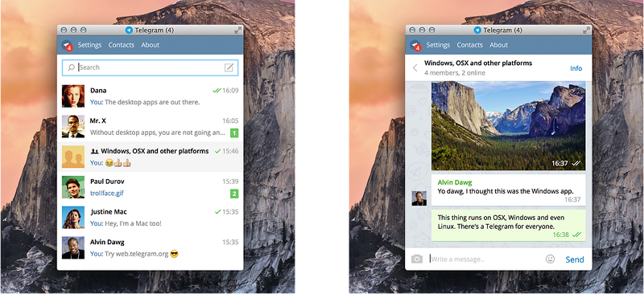

首頁 >
官方新聞 > 精簡模式
Telegram 桌面版加入精簡模式
適用於 Windows、OSX 和 Linux 的官方 Telegram 應用程式現在有精簡模式可用 - 你可以調整視窗的大小，以便只有一欄繼續存在。這使得 Telegram 在較小的桌上型或筆記本電腦螢幕上更易於使用。

你可以在 desktop.telegram.org 下載 Telegram 桌面版。截至上週，這個應用程式也有在蘋果的 AppStore 提供，與我們的原生 OSX 的應用程式並存。
要在您的計算機上登錄，只需輸入你的手機號碼，並取得透過 Telegram 傳遞到您的手機的驗證碼。所有訊息（除了那些私密聊天的內容）立即在所有的裝置之間同步，這樣你就可以繼續你在其他裝置的操作。
2014年十二月22日
電報團隊